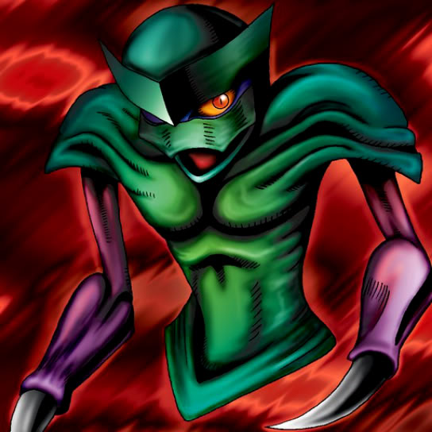

Larvas

Description: "When this card is flipped face-up, all Mon Larvas cards are increased 500 points."
STATS
ATK: 800
DEF: 1000DECK COST
Deck Cost per Card: 23EFFECT NOT IMPLEMENTED
Fusion List (5 Possible Fusions)
- Larvas + Happy Lover = Garvas
- Larvas + Harpie Lady = Garvas
- Larvas + Monsturtle = Turtle Tiger
- Larvas + Mystical Sheep #2 = Mon Larvas
- Larvas + Spirit of the Winds = Nekogal #2